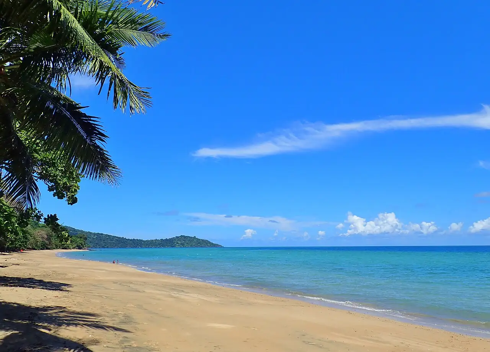

N’Gouja
Kani-Kéli, Mayotte · snorkeling, baignade

Plage du sud de Mayotte, célèbre pour ses tortues vertes qui broutent les herbiers à quelques mètres du bord. Un snorkeling facile dans le lagon, au pied du mont Choungui.
- Lieu
- Kani-Kéli, Mayotte
- Niveau
- Débutant
- Activités
- snorkeling, baignade
- Type d'eau
- Mer / océan
- Coordonnées
- -12.96, 45.08 (position approximative du secteur)
Dangers à connaître
- Tortues protégées : interdiction de les toucher ou de les gêner.
- Platier corallien peu profond à marée basse.
- Courants au-delà du tombant du récif.
Le conseil d'Ocean Buddy
Garde au moins quelques mètres avec les tortues, sans les toucher ni les poursuivre, et renseigne-toi sur l’accès : Mayotte a été durement touchée par le cyclone Chido fin 2024.
Ouvrir dans Ocean Buddy Télécharger sur l'App Store
Source : Fiche Ocean Buddy · septembre 2026 · à vérifier localement.